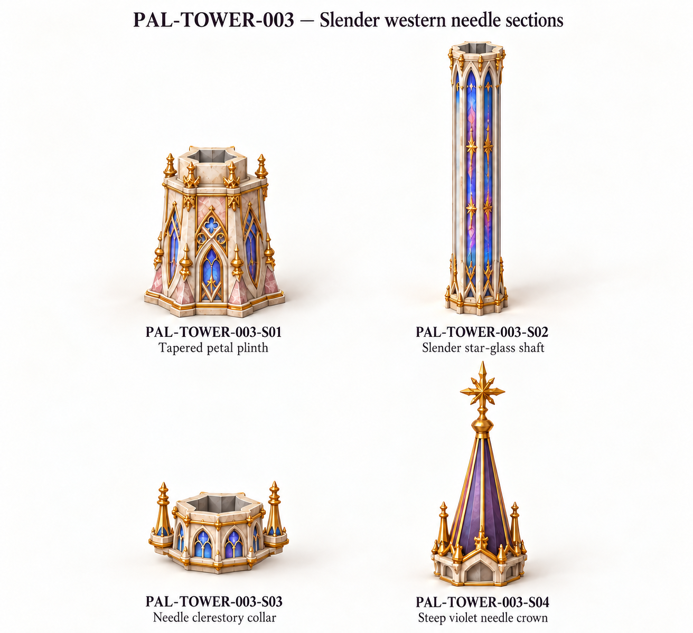
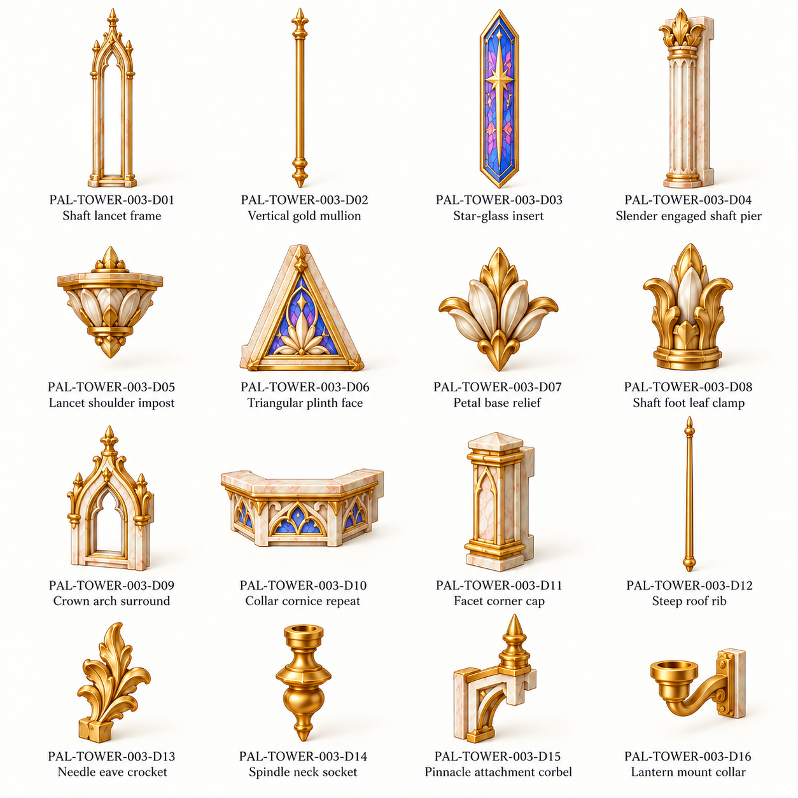
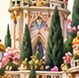

Original source crop

Draft component references. Original front controls visible proportions. No models or verified physical joins.
All families · Assembly/review notes · Part IDs · Source and join schedule
Extra lower crown tier removed. Whole-cone decor corrected to a single rib; mounts simplified. D12 is a fitting concept, its section/thickness remains to be normalized.


